了解浏览器，它已经成为主流的信息传递方式，并将持续壮大！
了解它的内核、构成及动作方式。

> 蒂姆·伯纳斯·李 （1955.06.08 - ）
2017 年，他因 “发明万维网、第一个浏览器和使万维网得以扩展的基本协议和算法” 而获得 2016 年度的图灵奖。
世界上第一个网站 http://info.cern.ch/ ，于 1991.8.6 是上网，它解释了万维网是什么，如何使用网页浏览器和如何建立一个网页服务器等等。
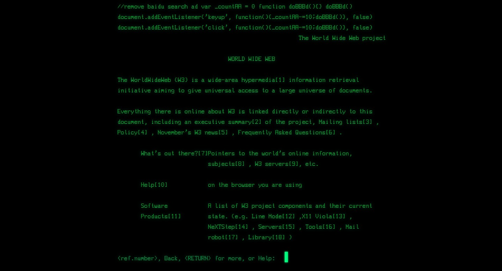深入理解现代浏览器 1
本章节来源于 Mariko Kosaka （小坂真子） 2018 年 9 月在 Google 开发者网站上发表的 “Inside look at modern web browser” 系列文章。
- 她的网站： https://kosamari.com/
- 她的 Twitter： https://twitter.com/kosamari
原文链接：
- https://developers.google.com/web/updates/2018/09/inside-browser-part1
- https://developers.google.com/web/updates/2018/09/inside-browser-part2
- https://developers.google.com/web/updates/2018/09/inside-browser-part3
- https://developers.google.com/web/updates/2018/09/inside-browser-part4
本章节分为以下 4 个部分：
- 架构：以 Chrome 为例，介绍现代浏览器的实现架构；
- 导航：从输入 URL 到获取到 HTML 响应称为导航；
- 渲染：浏览器解析 HTML 、下载外部资源、计算样式并把网页绘制到屏幕上；
- 交互：用户输入事件的处理与优化。
准备
一些基础性概念……
_1.CPU & GPU
CPU（Central Processing Unit）和 GPU（Graphics Processing Unit）作为计算机中最重要的两个计算单元直接决定了计算性能。
CPU 是计算机的大脑，负责处理各种不同的任务。GPU 最初被用于处理图像，更擅长利用多核心同时处理单一的任务。
_2. 计算机架构
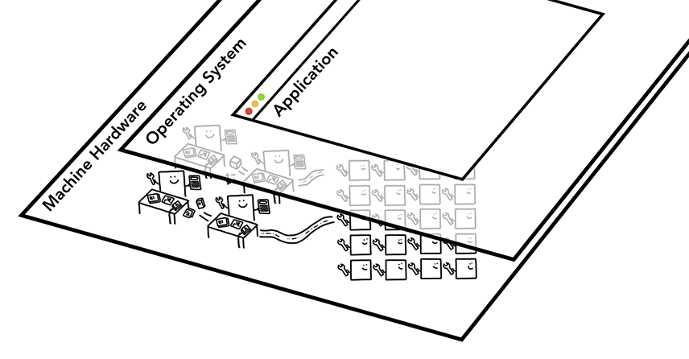如图，可以把计算机自下而上分成三层：硬件、操作系统和应用。有了操作系统的存在，上层运行的应用可以使用操作系统提供的能力使用硬件资源而不会直接访问硬件资源。
_3. 进程与线程
一个进程（Process）是应用正在运行的程序，而线程（Thread）是进程中更小的部分。当应用被启动时，进程就会被创建出来，程序可以创建线程来帮助其工作，操作系统会为进程分配私有的内存空间以供使用。当关闭程序时，这段私有的内存也会被释放。其实，还有比线程更小的存在 – 协程， async/await 就是基于协程实现的。
_4. 进程间通信（IPC）
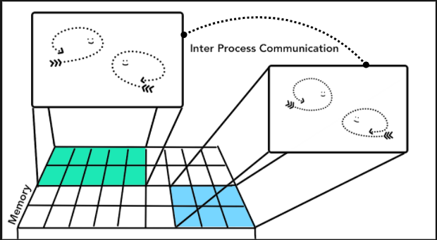一个进程可以让操作系统开户别一个进程处理不同的任务。当两进程需要通信时，可以使用 IPC（Inter Process Communication）。
多数程序被设计成使用 IPC 来进程进程间的通信，好处在于一个进程给另一个进程发消息而没有回应时，并不影响当前的进程继续工作。
架构
Web 浏览器架构，可以实现为一个进程包含多个线程，也可以实现为很多进程包含少数线程通过 IPC 通信。如何实现浏览器，并没有统一的标准。Chrome 最新的架构：最上层是浏览器进程，负责承担各项工作的其他进程，比如实用程序进程、渲染器进程、GPU 进程、插件进程等，如下图所示：
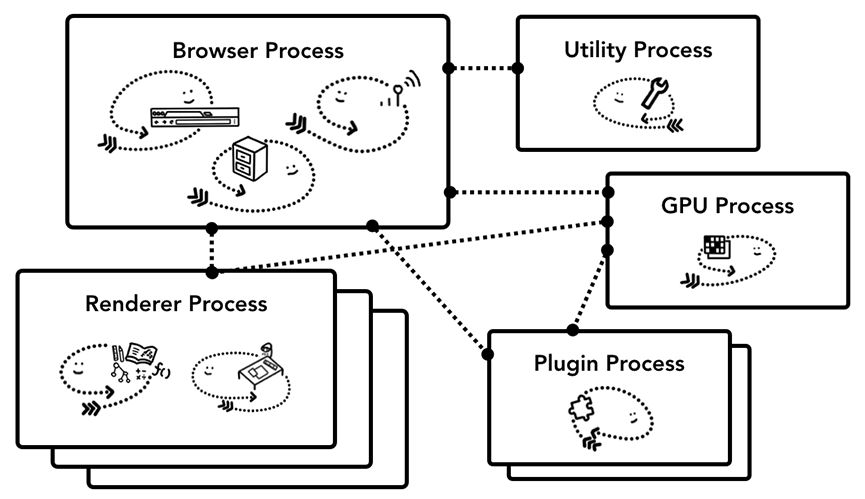渲染器进程对应新开的标签页，每新开一个标签页，就会创建一个新的渲染器进程。不仅如此，Chrome 还会尽量给每个站点新开一个渲染器进程，包括 iframe 中的站点，以实现站点隔离。
下面详细了解一下每个进程的作用，可以参考下图。
- 浏览器进程 ：控制浏览器这个应用的 chrome （主框架）部分，包括地址栏、书签、前进/后退按钮等，同时也会处理浏览器不可见的高权限任务，如发送网络请求、访问文件；
- 渲染器进程 ：负责在标签页中显示网站及处理事件；
- 插件进程 ： 控制网站用到的所有插件；
- GPU 进程 ：在独立的进程中处理 GPU 任务。之所以放到独立的进程，是因为 GPU 要处理来自多个应用的请求，但要在同一个界面上绘制图形。
当然，还有其他进程，比如扩展进程、实用程序进程。要知道你的 Chrome 当前打开了多少个进程，点击右上角的按钮，选择“更多工具”，再选择“任务管理器”。
Chrome 的多进程架构有哪些优点呢？
最简单的情况下，可以想像一个标签页就是一个渲染器进程，比如 3 个标签页就是 3 个渲染器进程。这时候，如果有一个渲染器崩溃了，只要把它关掉即可，不会影响其他标签页。如果所有标签页都运行在一个进程中，那只要有一个标签页卡住，所有标签页都会卡住。
除此之外，多进程架构还有助于安全和隔离。因为操作系统有限制进程特权的机制，浏览器可以借此限制某些进程的能力。比如，Chrome 会限制处理任意用户输入的渲染器进程，不让它任意访问文件。
由于进程都有自己私有的内存空间，因此每个进程可能都会保存某个公共基础设施（比如 Chrome 的 JavaScript 引擎 V8）的多个副本。这会导致内存占用增多。为了节省内存，Chrome 会限制自己可以打开的进程数量，限制的条件取决于设备内存和 CPU 配置，达到限制条件后，Chrome 会用一个进程处理同一个站点的多个标签页。
Chrome 架构进化的目标是将整个浏览器程序的不同部分服务化，便于分割或合并。基本思路是在调配设备中，每个服务独立开里程，保证稳定；在低配设备中，多个服务合并为一个进程，节约资源。同样的思路也应用到了 Android 上。
重点说一说 站点隔离 。站点隔离是新近引入 Chrome 的一个里程碑式特性，即每个跨站点 iframe 都运行一个独立的渲染器进程。即便像前面说的那样，每个标签页单开一个渲染器进程，但允许跨站点的 iframe 运行在同一个渲染器进程中并共享内存空间，那安全攻击仍然有可能绕开 同源策略 ，而且有人发现在现代 CPU 中，进程有可能读取任意内存。
进程隔离是隔离站点、确保上网安全最有效的方式。Chrome 67 桌面版默认采用站点隔离。站点隔离是多年工程化努力的结果，它并非多开几个渲染器进程那么简单。比如，不同的 iframe 运行在不同进程中，开发工具在后台仍然要做到无缝切换，而且即便简单地 Ctrl+F 查找也会涉及在不同进程中搜索。
导航
导航涉及浏览器进程与线程间为显示网页而通信。一切从用户在浏览器中输入一个 URL 开始，输入 URL 之后，浏览器会通过互联网获取数据并显示网页。从请求网页到浏览器准备渲染网页的过程，叫做 _导航 。
如前所述，标签页外面的一切都由浏览器进程处理。浏览器进程中包含如下线程：
- UI 线程：负责绘制浏览器的按钮和地址栏；
- 网络线程：负责处理网络请求并从互联网接收数据；
- 存储线程：负责访问文件和存储数据。
下面我们来逐步看一看导航的几个步骤。
1. 处理输入
UI 线程会判断用户输入的是查询字符器还是 URL（因为 Chrome 地址样同时也是搜索框）。
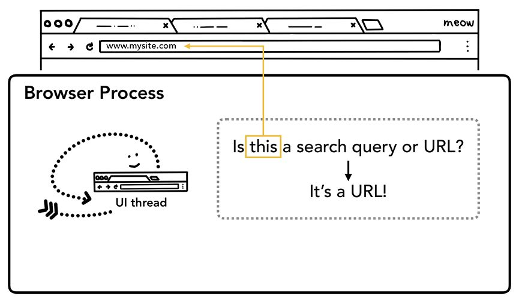2. 开始导航
如果输入的是 URL ，UI 线程会通知网络线程发起网络调用，获取网站内容。此时标签页左端显示旋转图标，网络线程进行 DNS 查询、建立 TLS 连接（对于 HTTPS）。网络线程可能收到服务器的重定向头部，如 HTTP 301 ，此时网络线程会跟 UI 线程沟通，告诉它服务器需求重定向，然后，再发起对另一个 URL 的请求。
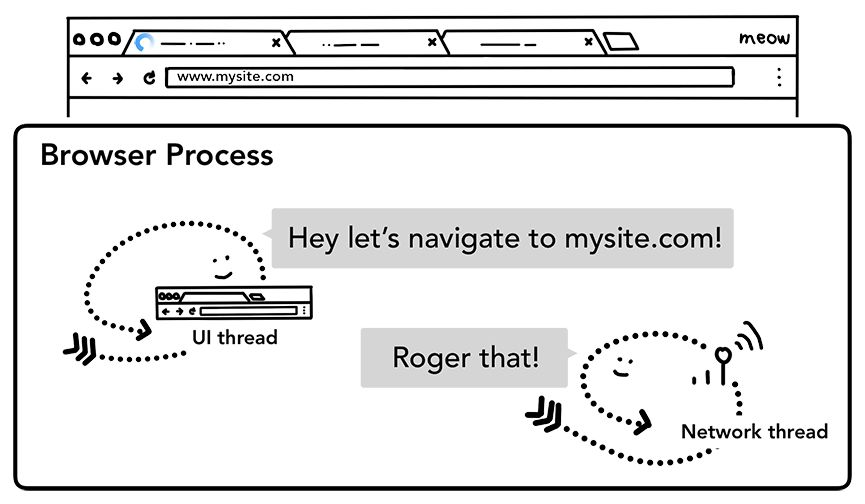3. 读取响应
服务器返回的响应体到来之后，网络线程会检查接收到的前几个字节。响应的 Content-Type 头部应该包含数据类型，如果没有这个字段，则需要 MIME 类型嗅探 。看看 Chrome 源码 中的注释就知道这一块有多难搞……
如果响应是 HTML 文件，那下一步就是把数据交给渲染进程。但如果是一个 zip 文件或其他文件，就意味着是一个下载请求，需要把数据传给下载管理器。
此时也是 “安全浏览” 检查环节。如果域名和响应数据匹配已知的恶意网站，网络线程会显示警告页。此外，CORB（Cross Origin Read Blocking）检查也会执行，以确保敏感的跨站点数据不会发送给渲染器进程。
4. 联系渲染器进程
所有查检完毕，网络线程确认浏览器可以导航到用户请求的网站，于是会通知 UI 线程数据已经准备好了，UI 线程会联系渲染器进程渲染网页。
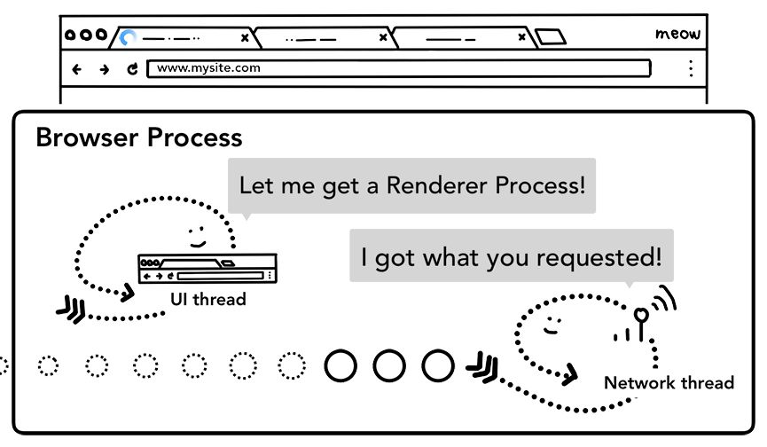由于网络请求可能要共几百毫秒才能拿到响应，这里还会应用一个优化策略。第二步 UI 线程要求网络线程发送请求后，已经知道可能要导航到哪个网站了。因此在发送网络请求的同时，UI 线程会提前联系或并行启动一个渲染进程。这样在网络线程收到数据后，就已经有渲染器进程原地待命了。如果发生了重定向，这个待命进程可能用不上，而是换作其他进程去处理。
= ‘流’行策略
5. 提交导航
数据和渲染器进程都有了，就可以通过 IPC 从浏览器进程向渲染器进程提交导航，渲染器进程也会同时接收到不间断的 HTML 数据流。当浏览器进程收到渲染器进程的确认消息后，导航完成，文档加载阶段开始。
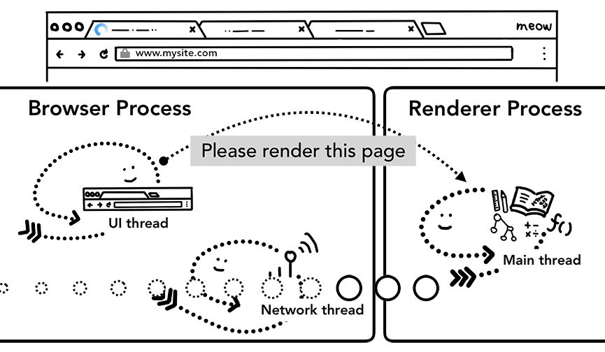此时，地址栏会更新，安全指示图标和网站设置 UI 也会反映新页面的信息。当前标签页的会话历史会更新，后退/前进按钮起作用。为便于标签页/会话在关闭标签页或窗口后恢复，会话历史会写入磁盘。
6. 初始加载完成
提交导航之后，渲染器进程将负责加载资源和渲染页面，而在“完成”渲染后（在所有 iframe 中的 onload 事件触发且执行完成后），渲染器进程会通过 IPC 给浏览器进程发送一个消息。此时，UI 线程停止标签页上的旋转图标。
初始加载完成后，客户端 JavaScript 仍然可能加载额外资源并重新渲染页面。
如果此时用户在地址又输入了其他 URL 呢？浏览器进程还会重复上述步骤，导航到新站点。不过在些之前，需要确认已渲染的网站是否关注 beforeunload 事件。因为标签页中的一切，包括 JavaScript 代码都由渲染器进程处理，所以浏览器进程必须与当前的渲染器进程确认后再导航到新站点。
如果导航请求来自当前渲染器进程（用户点击了链接或 JavaScript 运行了 window.location = "https://newsite.com" ），渲染器进程首先会检查 beforeunload 处理程序。然后，它会走一遍与浏览器进程触发导航同样的过程，唯一的区别在于导航请求是由渲染器进程提交给浏览器进程的。
导航到不同的网站时，会有一个新的独立渲染器进程负责处理新导航，而老的渲染器进程要负责处理 unload 之类的事件。更多细节可以参考 “页面生命周期 API” 。
另外，导航阶段还可能涉及 Service Worker ，即网页应用中的网络代理服务，开发者可以通过它控制什么缓存在本地，何时从网络获取新数据。 Service Worker 说到底也是需要渲染器进程运行的 JavaScript 代码。 如果网站注册了 Service Worker ，那么导航请求到来时，网络线程会根据 URL 将其匹配出来，此时 UI 线程就会联系一个渲染器进程来执行 Service Worker 的代码：可能只要从本地缓存读取数据，也可能需要发送网络请求。
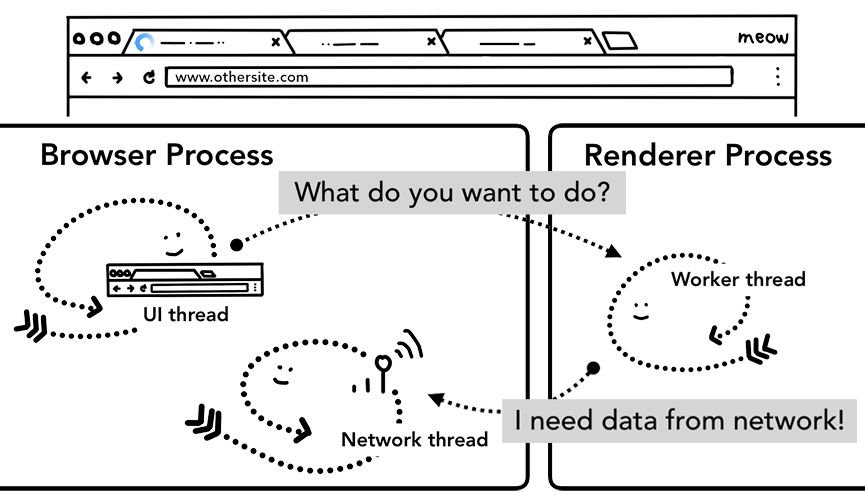如果 Service Worker 最终决定从网络请求数据，浏览器进程与渲染器进程间的这种往返通信会导致延迟。因此，这里会有一个“导航预加载”的优化，即在 Service Worker 启动同时预先加载资源，加载请求通过 HTTP 头部与服务器沟通，服务器决定是否完全更新内容。
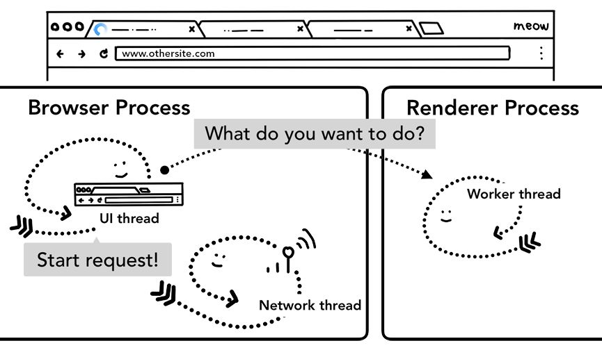渲染
_渲染 是渲染器进程内部的工作，涉及 Web 性能的诸多方面。标签页中的一切都由渲染器进程负责处理，其中主线程负责运行大多数客户端 JavaScript 代码，少量代码可能由工作线程处理（如果用到了 Web Worker 或 Service Worker）、合成器（compositor）线程和栅格化（raster）线程负责高效、平滑地渲染页面。
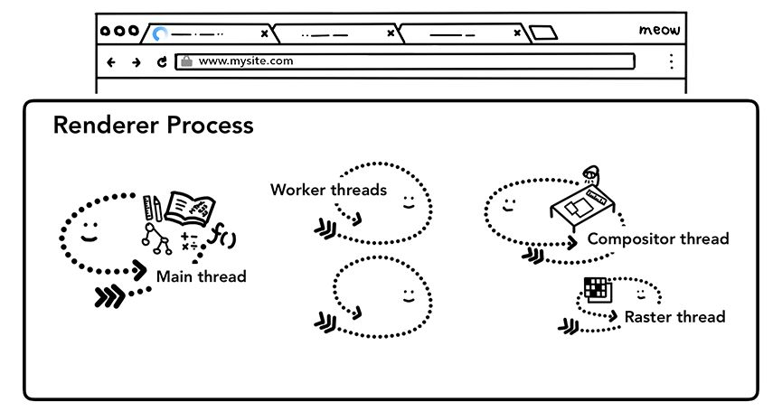渲染器进程的核心任务是把 HTML、CSS 和 JavaScript 转换成用户可以交互的网页接下来，我们从整体上过一遍渲染器进程处理 Web 内容的各个阶段。
1. 解析 HTML
_1. 构建 DOM
渲染器进程收到导航的提交消息后，开始接收 HTML，其主线程开始解析文本字符器（HTML），并将它转换为 DOM（Document Object Model，文档对象模型）。
DOM 是浏览器内部对页面的表示，也是 JavaScript 与之交互的数据结构和 API 。
如何将 HTML 解析为 DOM 由 HTML 标准定义。HTML 标准要求浏览器兼容错误的 HTML 写法，因此浏览器会“忍气吞声”，绝不报错。详情可以看看 “解析器错误处理及怪异情形简介” 。
_2. 加载子资源
网站都会用到图片、CSS 和 JavaScript 等外部资源。浏览器需要从缓存或网络加载这些文件，主线程可以在解析并构建 DOM 过程中发现一个加载一个，但这样效率太低。为此，Chrome 会在解析同时并发运行“预加载扫描器”，当发现 HTML 文档中有 <img>或 <link> 时，预加载扫描器会将请求提交给浏览器进程中的网络线程。
_3.JavaScript 可能阻塞解析
如果 HTML 解析器碰到 <script> 标签，会暂停解析 HTML 文档并加载、解析和执行 JavaScript 代码。因为 JavaScript 有可能通过 document.write() 修改文档，进而改变 DOM 结构（HTML 标准的“解析模型”有一张图可以一目了然： https://html.spec.whatwg.org/multipage/parsing.html#overview-of-the-parsing-model）。 所以 HTML 解析器必须停下来执行 JavaScript ，然后再恢复解析 HTML 。至于执行 JavaScript 的细节，大家可以关注 V8 团队相关的分享： https://mathiasbynens.be/notes/shapes-ics 。
提示浏览器你要加载资源。
2. 计算样式
光有 DOM 还不行，因为并不知道页面应该长啥样。所以接下来，主线程要解析 CSS 并计算每个 DOM 节点的样式。这个过程就是根据 CSS 选择符，确定每个元素要应用什么样式。在 Chrome 开发工具“计算的模式”中可以看每个元素计算后的样式。
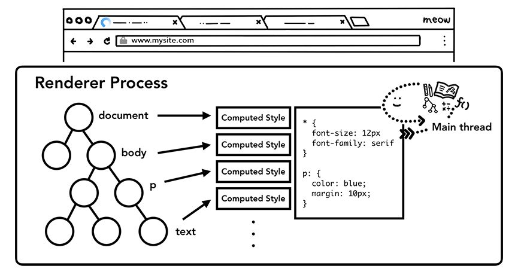就算网页没有提供任何 CSS ，每个 DOM 节点仍然会有计算的样式。这是因为浏览器有一个默认的样式表，Chrome 默认的样式在这里： https://cs.chromium.org/chromium/src/third_party/blink/renderer/core/html/resources/html.css 。
3. 布局
到这一步，渲染器进程就知道了文档的结构，也知道了每个节点的样式，但基于这些信息仍然不足以渲染页面。比如，你通过电话跟朋友说：“画一个红色的大圆形，还有一个蓝色的小方形”，你的朋友仍然不知道该画成什么样。
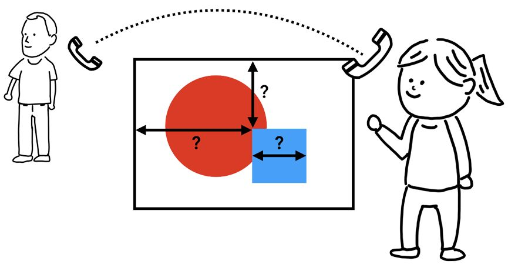_布局 就是要找到元素间的几何位置关系。主线程会遍历 DOM 元素及其计算样式，然后构造一棵布局树，这棵树的每个节点将带有坐标和大小信息。布局树与 DOM 树的结构类似，但只包含页面中可见元素的信息。如果元素被应用了 display: none ，则布局树中不会包含它（ visibility: hidden 的元素会包含在内）。类似的，通过伪类 p::before {content: "Hi!"} 添加的内容会包含在布局树中，但 DOM 树中却没有。
确定页面的布局要考虑很多因素，并不简单。比如，字体大小、文本换行都会影响段落的形状，进而影响后续段落的布局。CSS 可以让元素浮动到一边、隐藏溢出边界的内容、改变文本显示方向。可想而知，布局阶段的任务是非常艰巨的。
4. 绘制
有了 DOM、样式和布局，仍然不足以渲染页面。还要解决先画什么后画什么，即绘制顺序的问题。比如， z-index 影响元素叠放，如果有这个属性，那简单地按元素在 HTML 中出现的顺序绘制就会出错。
因此，在这一步，主线程会遍历布局树并创建绘制记录。绘制记录是对绘制过程的注解，比如“先画背景，然后画文本，最后画矩形”。如果你用过 <canvas> ，应该更容易理解这一点。
渲染是一个流水线作业（pipeline）：前一道工序的输出就是下一道工序的输入。这意味着如果布局树有变化，则相应的绘制记录也要重新生成。
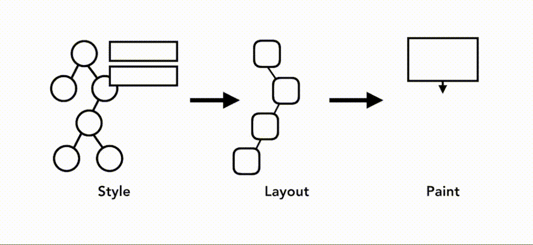如果元素有动画，浏览器就需要每帧运行一次渲染流水线。目前显示器的刷新率为每秒 60 次（60fps），也就是说每秒 60 帧，动画会显得很流畅。如果中间缺了帧，那页面就会“闪眼睛”。
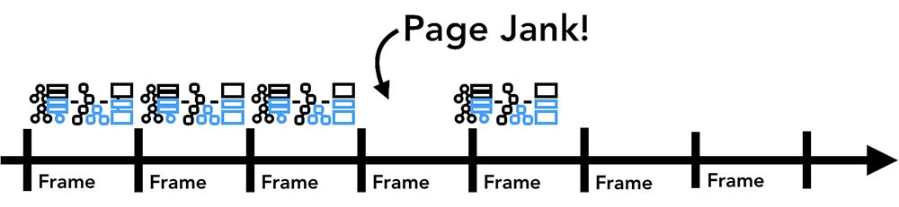即便渲染操作的频率能跟上屏幕刷新率，但由于计算发生在主线程上，而主线程可能因为运行 JavaScript 被阻塞，此时动画会因为阻塞被卡住。
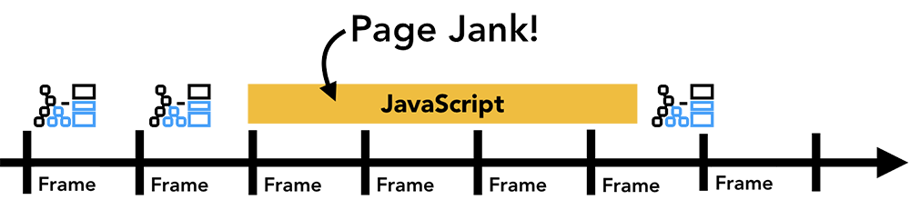此时，可以使用 requestAnimationFrame() 将涉及动画的 JavaScript 操作分块并调度到每一帧的开始去运行。对于耗时的不必操作 DOM 的 JavaScript 操作，可以考虑 Web Worker ，避免阻塞主线程。
5. 合成
知道了文档结构、每个元素的样式、页面的几何关系，以及绘制顺序，接下来就该绘制页面了。具体怎么绘制呢？把上述信息转换为屏幕上的像素叫做 _栅格化 。
最简单的方式，可能就是把页面在当前视口中的部分先转换为像素，然后随着用户滚动页面，再移动栅格化的画框（frame），填补缺失的部分。Chrome 最早的版本就是这样干的。
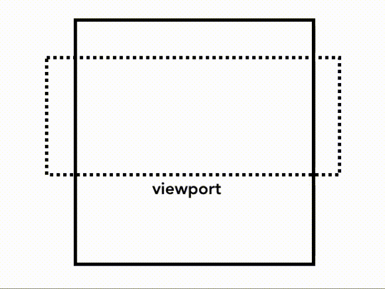但现代浏览器会使用一个更高级的步骤叫合成。什么是合成？ _合成（composite） 是将页面不同部分先分层并分别栅格化，然后再通过独立的合成器线程合成页面。这样当用户滚动页面时，因为层都已经栅格化，所以浏览器唯一要做的就是合成一个新的帧。而动画也可以用这样的方式实现：先移动层，再合成帧。
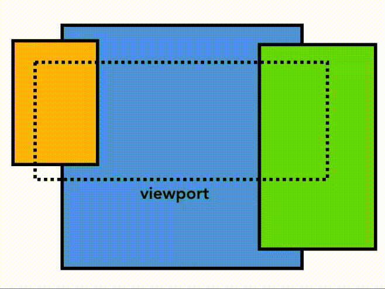怎么分层？为了确定哪个元素应该在哪一层，主线程会遍历布局树并创建分层树（这一部分在开发工具的“性能”面板中叫“Update Layer Tree”）。如果页面某些部分应该独立一层（如滑入的菜单），那你可以在 CSS 中给它加上 will-change 属性来提醒浏览器。
分层并不是越多越好，合成过多的层有可能还不如每帧都对页面中的一小部分执行一次栅格化更快。
创建了分层树，确定了绘制顺序，主线程就会把这些信息提交给合成器线程。合成器线程接下来负责将每一层转换为像素 – 栅格化。一层有可能跟页面一样大，此时合成器线程会将它切成小片（tile），再把每一片发给栅格化线程。栅格化线程将每一小片转换为像素后将它们保存在 GPU 的内存中。
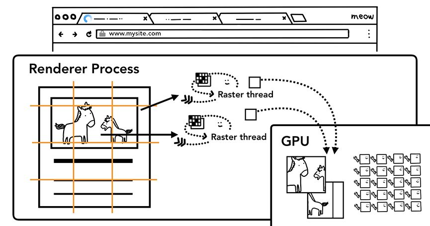合成器线程会安排栅格化线程优先转换视口（及附近）的小片，而构成一层的小片也会转换为不同分辨率的版本，以便在用户缩放时使用。
所有小片都栅格化以后，合成器线程会收集叫做“绘制方块”（draw quad）的小片信息，以创建合成器帧。
- 绘制方块：包含小片的内存地址、页面位置等合成页面相关的信息；
- 合成器帧：由从多绘制方块拼成的页面中的一帧。
创建好的合成器帧会通过 IPC 提交给浏览器进程。与此同时，为更新浏览器界面，UI 线程可能还会添加另一个合成器帧；或者因为有扩展，其他渲染器也可能添加额外的合成器帧。所有这些合成器帧都会发送给 GPU，以便最终显示在屏幕上。如果发生滚动事件，合成器线程会再创建新的合成器帧并发送给 GPU 。
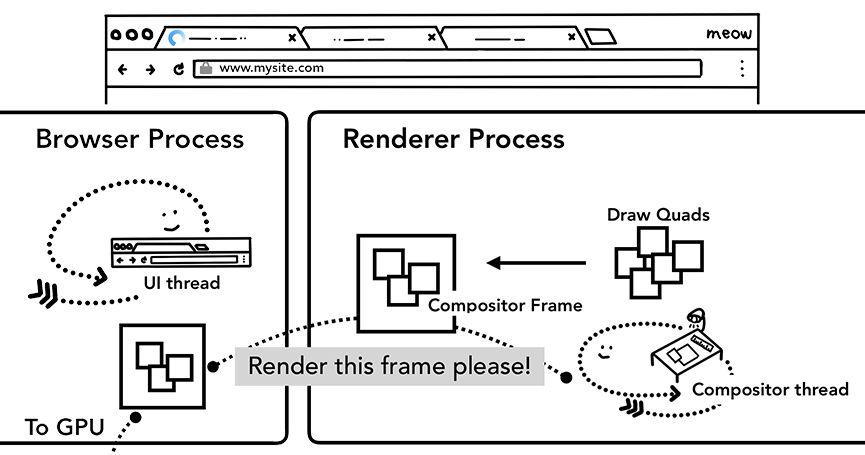使用合成的好处是不用牵扯主线程，合成器线程不用等待样式计算或 JavaScript 执行，这也是为什么“只需合成的动画”被认为性能最佳的原因。因为如果布局和绘制需要再次计算，那还得用到主线程。
交互
最后，我们看一看合成器如何处理用户交互。说到用户交互，有人可能只会想到在文本框里打字或点击鼠标。实际上，从浏览器的角度看，交互意味着来自用户的任何输入：鼠标滚动转动、触摸屏幕、鼠标悬停，这些都是交互。
当用户交互比如触摸事件发生时，浏览器进程首先接收该手势。但是，浏览器进程仅仅知道手势发生在哪里，因为标签页中的内容是渲染器进程处理。因此，浏览器进程会把事件类型（如 touchstart ）及其坐标发送给渲染器进程，渲染器进程会处理这个事件，即根据事件目标来运行注册的监听程序。
具体来说，输入事件是由渲染器进程中合成器线程处理的。如前所述，如果页面上没有注册事件监听程序，那合成器线程可以完全独立于主线程生成新的合成器帧。但是如果页面上注册了事件监听程序呢？此时合成器线程怎么知道是否有事件要处理？
这就涉及一个概念，叫“非快速滚动区”（non-fast scrollable region）。我们知道，运行 JavaScript 是主线程的活儿。在页面合成后，合成器线程给附加了事件处理程序的页面区域打上 “Non-Fast Scrollable Region” 的记号。有了这个记号，合成器线程就可以在该区域发生事件时把事件发送给主线程。
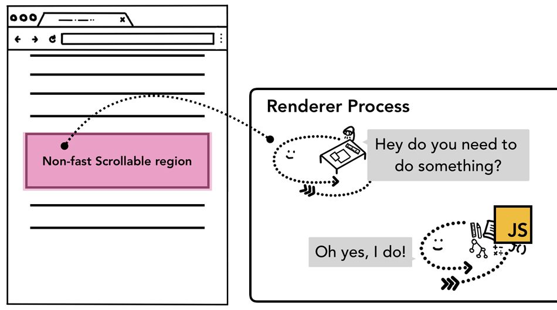如果事件发生在这个区域外，那合成器线程会继续合成新帧而不会等待主线程。
提到注册事件，有一个常见的问题要注意。很多人喜欢使用事件委托来注册处理程序，这是利用事件冒泡原理，把事件注册到最外层元素上，然后再根据事件目标是否执行任务。
一个事件处理程序就可以面向多个元素，这种高效的写法因此很流行。然而，从浏览器的角度看，这样会导致整个页面被标记为“非快速滚动区”。这也就意味着，即便事件发生在那些不需要处理的元素上，合成器线程也要每次都跟主线程沟通，并等待它的回应。于是，合成器线程平滑滚动的优点就被抵销了。
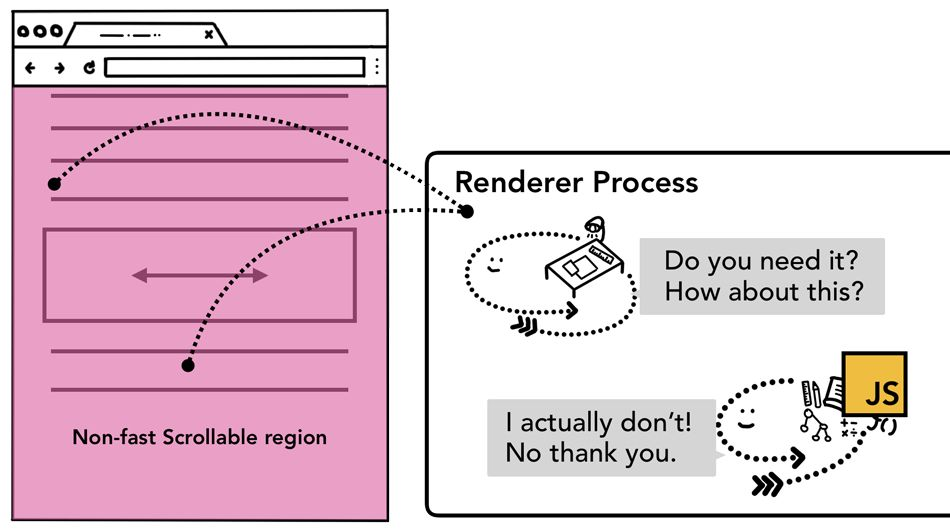为缓冲使用事件委托带来的副作用，可以在注册事件时传入 passive: true 。这个选项会提醒浏览器，你仍然希望主线程处理事件，但与此同时合成器线程也可以继续合成新的帧。
document.body.addEventListener(
'touchstart',
(evt) => {
// ...
},
{ passive: true }
);
此外，检查事件是否可以取消也是一个优化策略。假设页面中有一个盒子，你想限制盒子中的内容只能水平滚动。使用 passive: true 可以让页面平滑滚动，但为了限制滚动方向而调用 preventDefault 则不会避免垂直滚动，此时可以检查 evt.cancelable 。
document.body.addEventListener(
'pointermove',
(evt) => {
if (evt.cancelable) {
evt.preventDefault(); // 阻止原生滚动
// ...
}
},
{ passive: true }
);
当然，也可以使用 CSS 规则，如 touch-action 完全避免使用事件处理程序。
#area {
touch-action: pan-x;
}
合成器线程把事件发送给主线程以后，要做的第一件事就是通过测试（hit test）找到事件目标，命中测试就是根据渲染进程生成的绘制记录数据和事件坐标找到下方的元素。
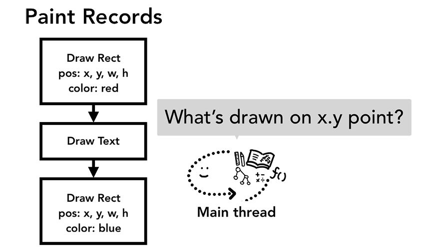另外，事件还有一个触发频率的问题。通常的触屏设备每秒会产生 60~120 次触碰事件，而鼠标每秒会产生约 100 次事件。换句话说，输入事件具有比每秒刷新 60 次的屏幕更高的保真度。
如果像 touchmove 这种连续性事件，以每秒 120 次的频率发送到主线程，相比更慢的屏幕刷新率而言，就会导致过多的命中测试和 JavaScript 执行。
为把主线程过多的调用降至最少，Chrome 会合并（coalesce）连续触发的事件（如 wheel、mousewheel、mousemove、pointermove、touchmove ），并将它们延迟到时恰好在下一次 requestAnimationFrame 之前派发。
对于其他离散触发的事件，像 keydown、keyup、mouseup、mousedown、touchstart 和 touchend 会立即派发。
合并后的事件在多数情况下足以保证不错的用户体验。但是，在一些特殊应用场景下，比如需要基于 touchmove 事件的坐标生成轨迹的绘图应用，合并事件就会导致丢失一些坐标，影响所绘线条的平滑度。
此时，可以使用指针事件的 =getCoalescedEvents= 方法，取得被合并事件的信息：
window.addEventListener('pointermove', (evt) => {
const events = evt.getCoalescedEvents();
for (let evt of events) {
const x = evt.pageX;
const y = evt.pageY;
// 使用 x 和 y 坐标画线
// ...
}
});
这是个小小的结尾，相信不少前端开发者早已知道给 <script> 标签添加 defer、async 属性的作用。通过阅读本文，你应该也知道了为什么在注册事件监听器时最好传入 passive: true 选项，知道了 CSS 的 will-change 属性让浏览器做出不同的决策。事实上，不止上面这些，看完看懂篇文章，你甚至也会对其他关于浏览器性能优化的细节感到豁然开朗，从而对更多关于网页性能的话题会产生兴起。而这正是深入理解现代浏览器的重要意义和价值所在，因为它为我们打开了一扇大门。
总结
至此，我们已经可能通过从用户在浏览器地址栏中的一次输入到页面图像的显示了解浏览器是如何工作的，小结如下：
- 浏览器进程做为最重要的进程负责大多数页签外部的工作，包括地址栏显示、网络请求、页签状态管理等；
- 不同的渲染进程负责不同的站点渲染工作，渲染进程间彼此独立；
- 渲染进程在渲染页面的过程中会通过浏览器进程获取站点资源，只有安全的资源才会被渲染进程接收到；
- 渲染里程中主线程负责除了图像生成图像生成外绝大多数工作，如何减少主线程上代码的运行是交互性能的关键；
- 渲染进程中的合成线程和栅格线程负责图像生成，利用分层技术可以优化图像生成的效率；
- 当用户与页面发生交互时，事件的传播途径从浏览器进程到渲染进程的合成线程再根据事件监听的区域决定是否要传递给渲染进程的主线程处理。